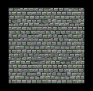

Lab 09 - alokacja pamieci, polimorfizm, tekstury
Lab 09 - Alokacja pamięci, polimorfizm, tekstury w SFML
C++17 standard
Wykorzystywane na tych i następnych zajęciach elementy języka C++ zostały wprowadzone do standardu jako C++17. Domyślnie QT Creator generuje projekt zgodny ze stndardem C++11, co oznacza, że niezbędna jest zmiana ustawień projektu. Otwórz plik *.pro i zmień linijkę:
CONFIG += console c++11na
CONFIG += console c++17Pamiętaj o wywołaniu polecenie Run qmake na pliku *.pro.
Wskaźniki
Zmienne, które tworzyliśmy do tej pory w programach poprzez prostą deklarację zmiennej miały swój czas życia ograniczony do jednego zakresu (scope) - fragmentu kodu, najczęściej wydzielonego klamrami, np. ciała funkcji, czy wnętrza pętli. Zmienne te były tworzone w sekcji pamięci operacyjnej zwanej stosem. Zmienne i obiekty takie są automatycznie usuwane w momencie wyjścia poza scope, w którym zostały zaalokowane, np. opuszczenia funkcji. W większości przypadków jest to działanie pożądane i zwalnia programistę z konieczności ręcznego zarządzania pamięcią.
Istnieją jednak przypadki, w których wskazane jest oddzielenie czasu życia obiektu od zakresu w którym został on utworzony. W tym celu używamy alokacji na stercie.
W celu alokacji zmiennych na stercie klasycznie używano operatora new. Tak utworzoną zmienną
należało następnie usunąć za pomocą operatora delete. Jako że o operacji dealokacji łatwo zapomnieć,
wiele programów do dziś przejawia problem nazywany wyciekiem pamięci.
🛠🔥 Zadanie 🛠🔥
Wykonaj poniższy kod obserwując użycie pamięci w Menedżerze zadań (Ctrl + Alt + Delete):
const int number_of_elements = 100000000;
for (int i = 0; i < number_of_elements; i++) {
int *number = new int;
}
std::cout << "Utworzono " << number_of_elements << " wskaznikow na wartosc typu int. Nacisnij jakis klawisz aby kontynuowac." << std::endl;
std::getchar();W celu unikania wycieków pamięci, w C++11 wprowadzono nowe typy tzw. inteligentnych wskaźników (ang. smart
pointer), w tym std::unique_ptr oraz std::shared_ptr. W tej instrukcji pominiemy
std::shared_ptr, ponieważ służy on do przechowywania obiektów, które mają wielu właścicieli (na
przykład znajdują się jednocześnie w więcej niż jednym wektorze). std::unique_ptr nie może być
kopiowany - obiekt na który wskazuje ma tylko jednego właściciela. W celu wykorzystania inteligentnych wskaźników
zaimportować #include <memory>.
std::unique_ptr to klasa, która w uproszczeniu, przejmuje odpowiedzialność nad czasem życia
wskaźnika. W konstruktorze wykonuje alokację obiektu przy pomocy new, a w destruktorze niszczy go za
pomocą delete. Zastępując wykorzystywanie zwykłych wskaźników w stylu języka C użyciem
std::unique_ptr można łatwo zapobiec wyciekom pamięci. Zmienna typu std::unique_ptr
automatycznie wywoła delete na przechowywanym wskaźniku kiedy wyjdzie poza zakresu, w którym została
zadeklarowana.
🛠🔥 Zadanie 🛠🔥
Zmień poprzedni kod tak, aby zamiast operatora new wykorzystywał typ std::unique_ptr.
Do stworzenia std::unique_ptr wykorzystaj funkcję std::make_unique.
Obserwuj użycie pamięci.
Wskazówka: jako, że do funkcji std::make_unique przekazujemy typ zmiennej, którą
chcemy utworzyć na stercie możemy opcjonalnie użyć słowa kluczowego auto w celu
ominięcia deklarowania obiektu o długiej nazwie typu: std::unique_ptr<int>. Nie spowoduje to
utraty czytelności kodu.
Po przeczytaniu powyższego opisu i wykonaniu zadania można odnieść wrażenie, że alokacja na stosie oraz alokacja
na stercie z użyciem std::unique_ptr są funkcjonalnie identyczne. W obu przypadkach obiekt niszczony
jest po wyjściu z zakresu w którym został zadeklarowany. Po co więc używać std::unique_ptr?
W C++11, obok typu std::unique_ptr wprowadzono również move semantics - możliwość
"przeniesienia" własności obiektu do innego zakresu (scope) lub kontenera. O ile w przypadku obiektów
zadeklarowanych na stosie owo przeniesienie w wielu przypadkach spowoduje konieczność wykonania kopii przynajmniej
części pól przenoszonego obiektu, to w przypadku std::unique_ptr przeniesienie nie spowoduje
kopiowania obiektu na stercie.
🛠🔥 Zadanie 🛠🔥
Spróbuj skompilować poniższy kod:
std::vector<std::unique_ptr<int>> some_pointers;
const int number_of_elements = 100000000;
for (int i = 0; i < number_of_elements; i++) {
auto number = std::make_unique<int>();
some_pointers.emplace_back(number);
}
std::cout << "Umieszczono " << number_of_elements << " elementow w std::vector<std::unique_ptr<int>>. Nacisnij jakis klawisz aby kontynuowac." << std::endl;
std::getchar();Zastanów się dlaczego tak napisany program nie działa.
Pamiętając, że obiekt na który wskazuje std::unique_ptr może mieć tylko jednego właściciela, przekaż
"prawo własności" wektorowi wywołując na zmiennej number funkcję std::move.
Polimorfizm
Użycie wskaźników na obiekty ze sterty zamiast obiektów na stosie pozwala na łatwe zinterpretowanie wskaźnika na obiekt klasy pochodnej jako wskaźnika na obiekt klasy bazowej.
🛠🔥 Zadanie 🛠🔥
Wykorzystując przykładowe klasy z poprzedniej instrukcji spróbuj skompilować poniższy kod. Pokazuje on w jaki
sposób możliwe jest przechowywanie elementu klasy pochodnej (Car) we wskaźniku na klasę bazową
(Vehicle).
std::unique_ptr<Vehicle> skoda_superb_as_vehicle = std::make_unique<Car>(
"Skoda Superb", "Gasoline", 200, true);
std::cout << "Name: " << skoda_superb_as_vehicle->name() << std::endl;
std::cout << "Has ABS: " << skoda_superb_as_vehicle->has_abs() << std::endl;Wiedząc, że traktujemy nasz samochód jako obiekt klasy Vehicle oraz analizując metody które są w tej
klasie zaimplementowane zastanów się dlaczego tak napisany program nie działa. Usuń linijkę powodującą błąd
kompilacji.
Zwróć uwagę, na różnicę w odwoływaniu się do pól obiektu (-> zamiast .). Z czego ona
wynika?
Aby klasa bazowa była polimorficzna musi posiadać przynajmniej jedną metodę wirtualną (przydomek
virtual). Metody wirtualne pozwalają na ich przeciążanie w klasie pochodnej w taki sposób, że gdy
wywołamy je poprzez wskaźnik do klasy bazowej zostanie wywołana właściwa implementacja z klasy pochodnej. Gdyby
funkcja nie miała przydomka virtual to jej wywołanie poprzez wskaźnik do klasy bazowej wywołałoby
implementację z klasy bazowej, nie zważając na to, że w klasie pochodnej znajduje się przeciążona wersja funkcji.
Niezwykle istotne jest aby każda bazowa klasa polimorficzna zawierała deklarację wirtualnego destruktora. Jeśli taka deklaracja nie znajdzie się w klasie bazowej to usuwanie obiektu klasy pochodnej poprzez wskaźnik do klasy bazowej jest niezdefiniowanym zachowaniem i może prowadzić do wycieku pamięci, gdyż wywołany zostanie tylko destruktor klasy bazowej. Najprostsza deklaracja wirtualnego destruktora wygląda następująco:
virtual ~ClassName() = default;🛠🔥 Zadanie 🛠🔥
Do klasy Vehicle dodaj wirtualny destruktor (jako public).
Rozwiązana została kwestia poprawnego wywoływania destruktora. Jednak nadal nie jest możliwe wywołanie metody
has_abs dla obiektu skoda_superb_as_vehicle, a przecież obiekt ten został utworzony z
wykorzystaniem konstuktora klasy Car.
W celu ponownego zinterpretowania wskaźnika do klasy bazowej jako wskaźnika lub referencji do klasy pochodnej
należy użyć wyłuskania wskaźnika ("wyciągnięcia" obiektu na który wskaźnik wskazuje) oraz specjalnej funkcji
dynamic_cast. Poniższy przykład pozwala wywołać metodę has_abs.
Car *skoda_superb_as_as_car = dynamic_cast<Car *>(skoda_superb_as_vehicle.get());
std::cout << "Has ABS: " << skoda_superb_as_as_car->has_abs() << std::endl;🛠🔥 Zadanie 🛠🔥
Dodaj definicję klasy Bike z poprzednich zajęć, przeanalizuj oraz wykonaj następujący kod:
std::vector<std::unique_ptr<Vehicle>> vehicles;
vehicles.emplace_back(std::make_unique<Car>("Skoda Superb", "Gasoline", 200, true));
vehicles.emplace_back(std::make_unique<Bike>());
for (int i = 0; i < vehicles.size(); i++) {
Car &some_car = dynamic_cast<Car &>(*vehicles[i]);
}Dlaczego zwracany jest wyjątek?
Możemy rozwiązać ten problem przechwytując wyjątek klauzulą try...catch lub rzutować wskaźnik i
sprawdzać czy wartość po rzutowaniu jest niezerowa:
for (int i = 0; i < vehicles.size(); i++) {
Car *some_car = dynamic_cast<Car *>(vehicles[i].get());
if (some_car != nullptr) { // cast successful
std::cout << i << ": abs=" << some_car->has_abs() << std::endl;
} else { // nope
std::cout << i << ": not a Car" << std::endl;
}
}Uwaga: zauważ, że w tym przypadku, z uwagi na bezpośrednie przekazanie wyniku działania funkcji
std::make_unique do metody emplace_back (bez użycia zmiennej do której przypisujemy
wartość zwracaną przez std::make_unique), nie było konieczności używania std::move.
Polimorfizm a SFML
Wszystkie "rysowalne" klasy z biblioteki SFML dziedziczą po klasie polimorficznej sf::Drawable.
Oznacza to, że możemy przechowywać wszystkie obiekty sceny w jednym kontenerze jako
std::unique_ptr<sf::Drawable>. Oznacza to, że np. w naszej grze, nie ma konieczności posiadania
osobnych kontenerów dla drzew, krzewów, kwiatów czy innych obiektów. Wszystkie podobne do siebie elementy
zgrupujemy możemy zgrupwać razem co upraszcza kod i zmniejsza liczbę powtórzeń.
🛠🔥 Zadanie 🛠🔥
Korzystając z teorii zamieszczonej powyżej utwórz w projekcie SFML wspólny wektor kilku obiektów o różnych kształtach i kolorach.
W pętli głównej programu wywołuj metodę draw na wyłuskanych ze wskaźnika obiektach sf::Drawable.
Wykorzystaj kod z instrukcji [Lab 07 - Wprowadzenie do SFML] i umieść utworzone koło, prostokąt i trójkąt w wektorze:
std::vector<std::unique_ptr<sf::Drawable>> shapes;Zamiast osobno wywoływać rysowanie dla poszczególnych figur wykorzystaj:
for(const auto &s : shapes) {
window.draw(*s);
}Następnie utwórz funkcję, w której zamieścisz cały kod do generacji figur. Funkcja powinna zwracać utworzony kontener.
void create_shapes(std::vector<std::unique_ptr<sf::Drawable>> &shapes)Tekstury/sprite'y w SFML
Teksturowanie to nanoszenie na kształty geometryczne płaskiego, dwuwymiarowego obrazu, tak aby nadać odzworowywanemu przedmiotowi wygląd bliższy prawdziwemu.
W przypadku grafiki dwuwymiarowej używa się pojęcia sprite'u - płaskiej bitmapy, która w całości lub fragmencie renderowana jest w określonym miejscu na ekranie.
Skąd wziąć tekstury?
Istnieje wiele witryn internetowych z darmowymi zasobami multimedialnymi, takimi jak tekstury, sprite'y czy dźwięki - w szczególności do zastosowań niekomercyjnych. Bazy mają zazwyczaj dobrze zorganizowany katalog, co ułatwia znalezienie odpowiedniego zasobu.
Pamiętaj - jeśli korzystasz z grafiki pobranej z Internetu, sprawdź na jakiej licencji zostały udostępnione zasoby. Często autorzy oczekują jedynie tzw. uznania autorstwa (ang. attribution) - wzmianki w informacjach o programie, skąd pochodzą zasoby i kto jest ich autorem.
Poniżej umieszczono odnośniki do kilku tekstur, od których możesz rozpocząć: grass, wall, guy.
{kind=link}
{kind=link}
{kind=link}
Użycie tekstur
W SFML teksturą nazywamy obraz, który przechowywany jest w pamięci, natomiast sprite to kształt, który będzie wyświetlony na ekranie, i który może być powiązany z daną teksturą.
Dodatkowy opis wykorzystania sprite'ów można znaleźć tutaj
Najprostsze użycie tekstury polega na wczytaniu bitmapy z pliku do obiektu sf::Texture, a następnie
utworzeniu obiektu sf::Sprite i powiązaniu z załadowaną teksturą.
sf::Texture texture;
if (!texture.loadFromFile("grass.png")) {
std::cerr << "Could not load texture" << std::endl;
return 1;
}
sf::Sprite sprite;
sprite.setTexture(texture);Klasa sf::Sprite dziedziczy z klas sf::Drawable oraz sf::Transformable,
zatem ma dostępne metody, które pozwalają na transformacje geometryczne (przesuwanie, obracanie, skalowanie).
Ponadto, dzięki polimorfizmowi sprite'y mogą być przechowywane w jednym kontenerze wraz z kształtami takimi jak
sf::RectangleShape.
🛠🔥 Zadanie 🛠🔥
Wczytaj do programu dostarczone tekstury.
Utwórz po jednym sprite dla każdej z nich, wyświetl je na ekranie w różnych miejscach i w różnej skali
(sf::Transformable::setScale).
Jeśli chcemy, aby dany sprite wyświetlał jedynie fragment powiązanej z nim tekstury, możemy użyć na nim metody
setTextureRect(sf::Rect), która pozwoli nam wskazać wybrany obszar. Wykorzystaj tę metodę do
wyświetlenia tylko twarzy wczytanej postaci.
sf::Texture texture_guy;
if(!texture_guy.loadFromFile("guy.png")) { return 1; }
sf::Sprite guy;
guy.setTexture(texture_guy);
guy.setTextureRect(sf::IntRect(10, 20, 20, 15)); //left, top, width, heightJeśli wybierzemy do wyświetlenia obszar większy niż rozmiar tekstury, a dodatkowo przestawimy teksturę w tryb
Repeated (metoda sf::Texture::setRepeated(bool), uzyskamy kafelkowanie (ang.
tiling), czyli tekstura będzie powielana sąsiadująco tak aby wypełnić cały obszar. Przeanalizuj:
sf::Texture texture_wall;
if(!texture_wall.loadFromFile("wall.png")) { return 1; }
texture_wall.setRepeated(true);
sf::Sprite wall;
wall.setTexture(texture_wall);
wall.setScale(0.3, 0.3);
wall.setTextureRect(sf::IntRect(0, 0, 500, 500));
🛠🔥 Zadanie 🛠🔥
Wykorzystaj kafelkowanie i teksturę grass, aby utworzyć tło w programie. Ustal odpowiedni
TextureRect dla sprite'a reprezentującego tło tak, aby obejmował cały rozmiar okna.
Ważne: dowiązanie tekstury do sprite'a nie powoduje skopiowania jej zawartości - jeśli obiekt
sf::Texture zostanie usunięty i spróbujemy wyświetlić sprite, z którym był powiązany, w miejsce
tekstury pojawi się białe wypełnienie.
Warto też ograniczyć liczbę tekstur i operacji na nich do minimum - na przykład używać tej samej tekstury dla wielu obiektów. W przypadku prostych gier, które nie mają wiele zasobów, najlepiej wczytać wszystkie niezbędne tekstury na początku uruchamiania programu i utrzymywać w pamięci aż do jego zakończenia.
Animacje
Animacje w grach zbudowanych na sprite'ach opierają się na zestawie następujących po sobie klatek animacji, przełączanych w odpowiednich momentach.
Często kolejne klatki animacji umieszczone są w jednej teksturze, a wybór danej klatki odbywa się poprzez
wskazanie odpowiedniego fragmentu tekstury (przypomnienie: metoda setTextureRect(sf::Rect). Dzięki
temu cała animacja może być przechowywana w pamięci układu graficznego, a przejście do kolejnej klatki animacji
nie jest kosztowne obliczeniowo.
🛠🔥 Zadanie 🛠🔥
Napisz klasę AnimatedSprite dziedziczącą po sf::Sprite.
Klasa powinna mieć interfejs, który pozwoli na wskazanie fragmentów tekstury będących kolejnymi klatkami animacji:
int animation_fps = 7;
AnimatedSprite hero(animation_fps);
/* add texture, set parameters, etc. */
hero.add_animation_frame(sf::IntRect(200, 0, 37, 37)); // 1 frame of animation
hero.add_animation_frame(sf::IntRect(250, 0, 37, 37)); // 2 frame
hero.add_animation_frame(sf::IntRect(300, 0, 37, 37)); // 3 frame
hero.add_animation_frame(sf::IntRect(350, 0, 37, 37)); // 4 frameKlasa powinna mieć metodę step, dzięki której będzie możliwe informowanie obiektu o czasie jaki
upłynął. Klasa na podstawie tego czasu oraz wewnętrznego parametru opisującego liczbę klatek na sekundę, powinna
decydować, czy ma nastąpić przełączenie na kolejną klatkę animacji.
Stwórz na scenie obiekt klasy AnimatedSprite, wykorzystaj teksturę postaci z załączonego zestawu tekstur.
Grawitacja
Grawitacja to stałe przyspieszenie działające w pionowym kierunku. Tak samo, jak w każdym kwancie czasu bieżąca prędkość wpływa na położenie obiektu, tak bieżące przyspieszenie wpływa na prędkość.
🛠🔥 Zadanie 🛠🔥
Dodaj do klasy AnimatedSprite informację o prędkości obiektu, analogicznie do klasy
CustomRectangleShape. Dodaj kolejną pochodną położenia - przyspieszenie i dodaj odpowiednie
oblicznenia w metodzie step. Ustaw pionową składową przyspieszenia tak, aby obiekt "spadał". Dodaj
odpowiednie parametry i warunki opisujące prędkość graniczną.
Zadania końcowe 🛠🔥
Labirynt
Wykorzystując dostarczone tekstury zbuduj grę Labirynt
- ustaw tło gry
- dodaj do sceny kilka obiektów - ścian z odpowiednią teksturą
- dodaj postać, którą będziesz mógł poruszać klawiszami kursora
- dodaj detekcję kolizji tak, aby niemożliwe było przechodzenie przez ściany
Ostateczny efekt powinien być podobny do tego na filmie.
Platformer
Bazując na kodzie służącym do wykrywania kolizji w zadaniu z poprzednich zajęć, napisz prosty silnik gry platformowej:
- dodaj do sceny kilka obiektów - platform z odpowiednią teksturą
- dodaj postać -
AnimatedSprite, którą będziesz mógł poruszać klawiszami kursora w lewo i w prawo, ustal dla niej grawitację - dodaj kod wykrywający kolizje pomiędzy postacią a którąkolwiek z platform, tak aby postać mogła stać na platformach
- dodaj skakanie - jeśli postać dotyka podłoża, nadaj jej prędkość początkową w górę
Autorzy: Michał Fularz, Tomasz Mańkowski, Dominik Pieczyński, Jakub Tomczyński